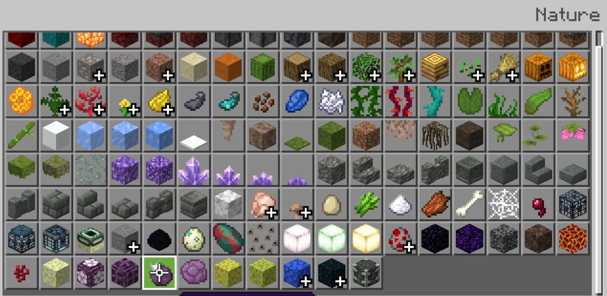
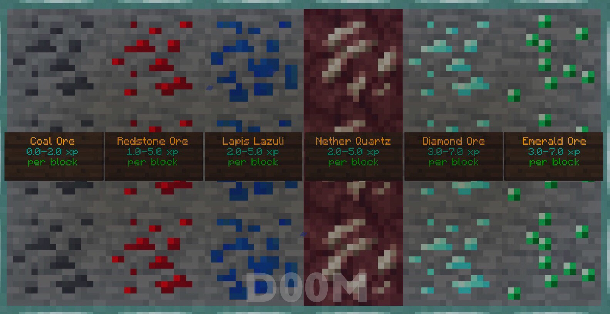
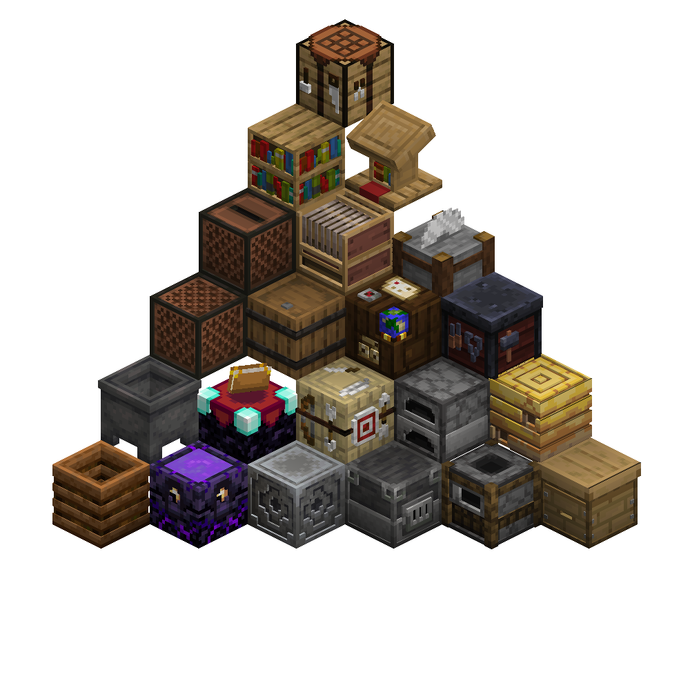

Tipologie di Blocchi
I blocchi sono la base del mondo di Minecraft, usati per costruire, estrarre e sopravvivere.
Blocchi Naturali
- Erba: Il blocco base delle superfici verdi, fondamentale per la crescita di piante e animali.
- Pietra: Usata per costruire e lavorare molti strumenti e blocchi decorativi.
- Legno: Base per molti oggetti, dal crafting alle costruzioni.
- Terra: Utile per coltivare piante e costruire terreni.


Blocchi Minerari
- Carbone: Fonte primaria di carburante per torce e forni.
- Ferro: Usato per strumenti, armature e meccanismi.
- Oro: Raro, usato per oggetti speciali e circuiti con la redstone.
- Diamante: Uno dei materiali più preziosi per equipaggiamenti resistenti.
- Redstone: Base per circuiti e automazioni.
Blocchi Speciali
- Letto: Permette di cambiare il punto di spawn e saltare la notte.
- Forno: Utile per cuocere cibo e fondere minerali.
- Cassa: Permette di immagazzinare oggetti.
- Portale al Nether: Permette di viaggiare tra dimensioni.
